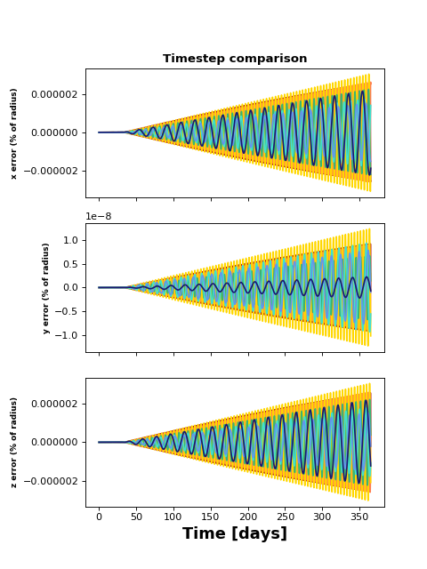
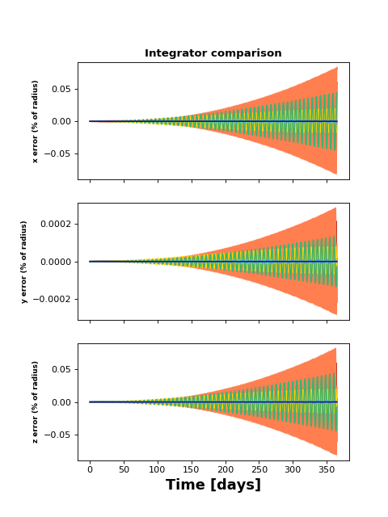
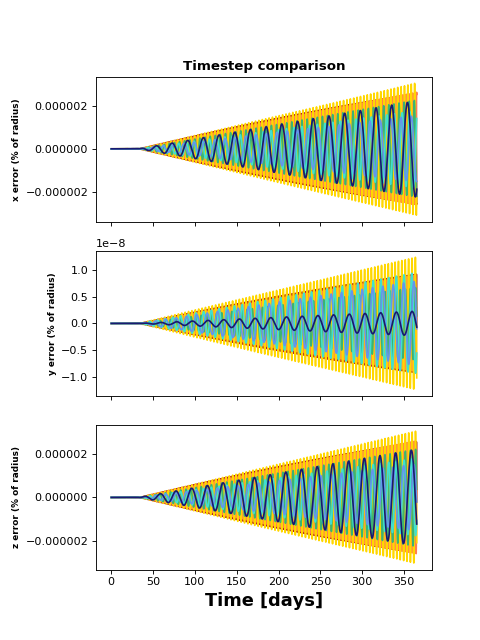
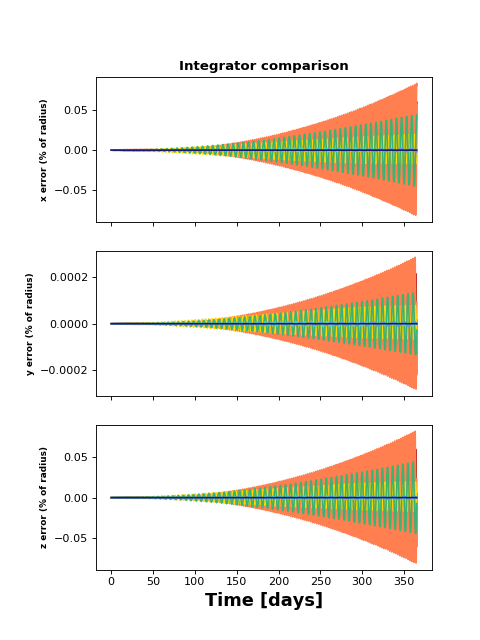

timestep.py ¶
Tests the minimum timestep we need in the N-body code. We integrate for one year and look at the errors as a fraction of the planet radius. Looks like a timestep of 1 hour leads to negligible (< 1 percent) error over 1 year.

Tests the minimum timestep we need in the N-body code. We integrate for one year and look at the errors as a fraction of the planet radius. Looks like a timestep of 1 hour leads to negligible (< 1 percent) error over 1 year.
